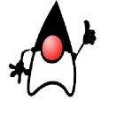

|  | StationeryStore |
|
Segundo a Wikipedia: Uma loja virtual designa uma página na interne dotada de um software de gerenciamentode pedidos (usualmente na forma de um carrinho de compras) na qual empresas podem oferece e vender seus produtos. Os clientes acessam o site, escolhem os produtos para aquisição, a forma de pagaento e recebem estes produtos em casa [Wikipedia|Loja Virtual]. O termo stationery é o nome geral dado para papel e outros materiais de escritório, tais como envolopes, blocos de anotações canetas, lápis, borracha, clips, grampos etc [Wikipedia|Sationery]. Assim Stationer store desgina papelaria. |
Copyright 2006 Jandl.